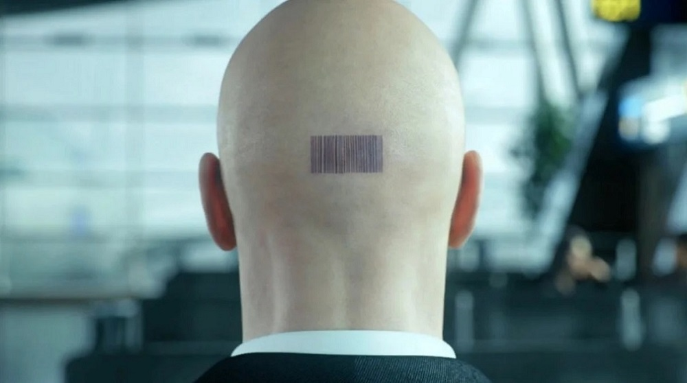
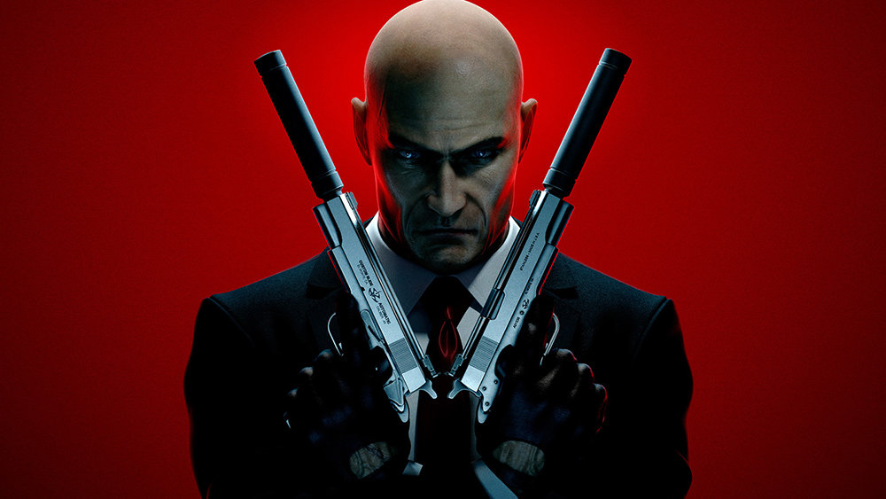

Посмотрим сможите ли вы угадать этого персонажа по затылку?
Как многие из вас могли догадаться, это Хитман лысый убийца со стрихкодом на голове. По другому его называют Агент 47 , созданный из рекомбинации ДНК опаснейщих умов планеты, он получил свое имя из-за того, что у него в результате генной инженерии 47 хромосом. Выращенный в стерильной лаборатории и тренированный тонкому искусству незаметно проникать и уничтожать , 47-й естественным образом стремился стать наёмным убийцей после своего выхода в реальный мир. В итоге он стал ведущим киллером в Международном контрактном агентстве . Несмотря на старания своего создателя, 47-й всё ещё обладает суровым нравом и зачатками сознания.
А теперь несколько интересных фактов о Хитмане:
- Знаковое оружие Сорок Седьмого — удавка , которую не замечают металлодетекторы, и пара пистолетов Silverballers , явно позаимствованных из фильмов Джона Ву.
- В детстве Хитман доводил персонал психиатрической больницы до исступления выстрелами из самодельных рогаток. Рогатки отбирали, но будущий убийца всегда ухитрялся смастерить новую .
- Внешность Сорок Седьмого моделировали с внешности актера озвучки Дэвида Бэйтсона .
- У Сорок Седьмого есть несколько псевдонимов, так или иначе связанных со смертью: Тобиас Рипер, Флетч Фишер, лорд Синклер, Мецгер, доктор Кроупс, Джейкоб Лейтер, мистер Джонсон и Бен Франклин.